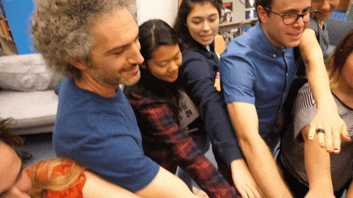

why
Now more than ever we need resiliant institutions willing to deliver their core values in novel and resourceful ways.
how
- Invite Everyone to the Table
- early, often and without agenda
- Find Room in the Margins
- of space and time
- This is Show Business
- not “tell business,” together we are producing hands-on, engaging experiences people choose to take part in
coffee
I love talking through ideas with folks. So if you're excited about something — a notion, an opportunity, and challenge — let's have virtual coffee: jeffgoldenson@gmail.com & 617.909.2917
Find more context in my cv and portfolio.